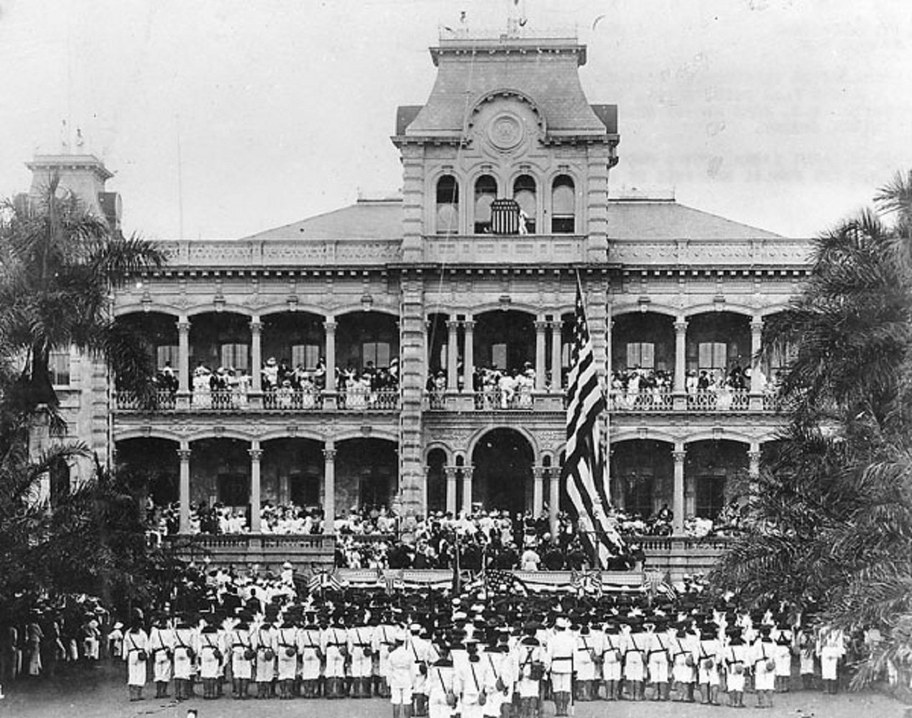

Hawái no se anexó como Texas. En 1893 un grupo local derrocó a la reina con apoyo del enviado de Estados Unidos; en 1898 el Congreso se quedó las islas por resolución, sin voto del reino. El estado llegó 61 años después.
El reino
Hasta 1893 Hawái era un reino independiente, reconocido por Estados Unidos y por otras potencias. Tenía monarca, gobierno y tierras de la Corona. Desde mediados del siglo XIX, plantadores y comerciantes extranjeros —muchos estadounidenses— controlaban azúcar, tierras y parte de la política. En 1887 impusieron a Kalakaua la llamada Constitución Bayoneta, que recortó el poder del rey y el voto de los nativos.
Su sucesora, Liliuokalani, quiso recuperar esa autoridad y redactar una constitución nueva. El 17 de enero de 1893 un Comité de Seguridad, formado sobre todo por residentes blancos y dueños de plantaciones, la derrocó. El ministro estadounidense John L. Stevens, sin orden de Washington, hizo desembarcar marines del USS Boston. La reina cedió para evitar un baño de sangre y dejó constancia de que se rendía a Estados Unidos, no a ese gobierno provisional, a la espera de que Washington la repusiera.
Grover Cleveland retiró el tratado de anexión, encargó el informe Blount y calificó el derrocamiento de acto ilegítimo. El gobierno provisional no devolvió el trono. En 1894 se proclamó la República de Hawái, con Sanford Dole como presidente. En 1895 una rebelión a favor de la reina fracasó; ella fue juzgada y detenida.
La anexión de 1898
Un tratado necesitaba dos tercios del Senado y no salía. Como en Texas, usaron una resolución conjunta, que solo pide mayoría simple. La Cámara la aprobó el 15 de junio de 1898, 209 a 91; el Senado, el 6 de julio, 42 a 21. William McKinley firmó la resolución Newlands el 7 de julio de 1898. Ese día las islas quedaron anexionadas. La cesión formal fue el 12 de agosto de 1898.
El contexto fue la guerra con España. Honolulu servía de escala hacia Filipinas, y Pearl Harbor ya se veía como base naval. La resolución traspasó la soberanía y unas 1,8 millones de acres de tierras públicas y de la Corona. No hubo referendo del reino. Al contrario: la Kūʻē Petition, organizada por Hui Aloha Aina, reunió más de 21.000 firmas nativas contra la anexión y se presentó al Congreso. No la detuvo.
En 1900 la Ley Orgánica convirtió Hawái en territorio. Dole fue el primer gobernador. Los habitantes no elegían gobernador ni senadores, y su delegado en la Cámara no votaba.
De territorio a estado 50
El territorio pidió la estadidad varias veces, empezando en 1903. El Congreso la fue dejando. Pearl Harbor, el 7 de diciembre de 1941, metió a Hawái en la Segunda Guerra Mundial y retrasó aún más el debate. En los años 50 se emparejó con Alaska. Alaska entró en enero de 1959; Hawái, después.
El Senado aprobó la admisión el 11 de marzo de 1959, 76 a 15; la Cámara, al día siguiente, 323 a 89. Eisenhower firmó la ley el 18 de marzo. El 27 de junio los residentes votaron si aceptaban entrar ya como estado: 132.773 a favor y 7.971 en contra, un 94 %. El único precinto que votó no fue Niihau, de población nativa. El 21 de agosto de 1959 Eisenhower firmó la proclamación: Hawái pasó a ser el estado 50.
Qué no conviene copiar
La anexión de 1898 no fue un voto popular del reino, y buena parte de los hawaianos nativos la rechazó por escrito. La votación clara es la de 1959, ya como territorio, para hacerse estado. Esa distancia —golpe, resolución, seis décadas de territorio, luego referendo— es el dato que una ficha de anexión no debería saltarse.